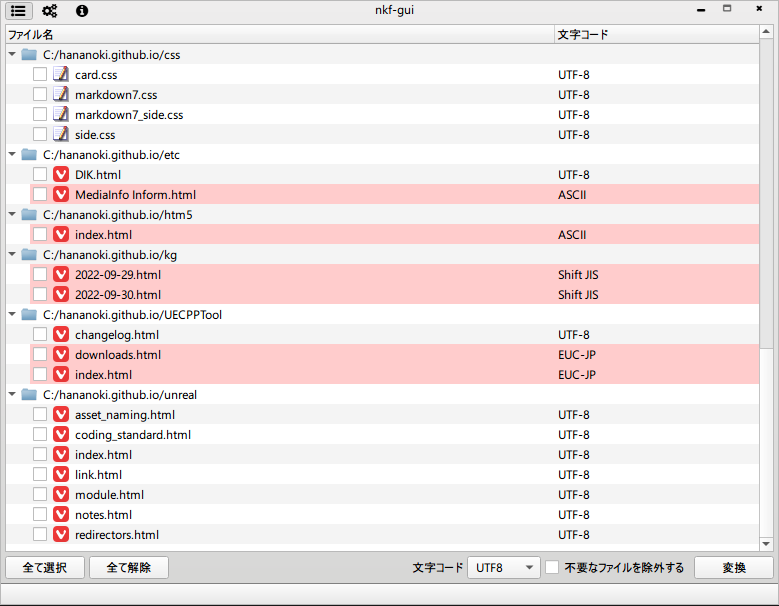

nkf-gui
nkfをGUIで扱うツール
コンセプトはパッと放り込んでパッと確認してパッと変換！！

機能
- 妙な文字コードが紛れていたら色で強調表示
- 妙な文字コードだけピックアップして表示する機能
- 特定フォルダを検索除外する機能
debug、releaseとか検索してほしくない時、等
現状の問題点
utf8しか対応してない- マルチスレッド処理を途中で中断出来てない
- 数万ファイル放り込むと延々と処理し続ける
ダウンロード
リポジトリ
https://github.com/hananoki/nkf-gui